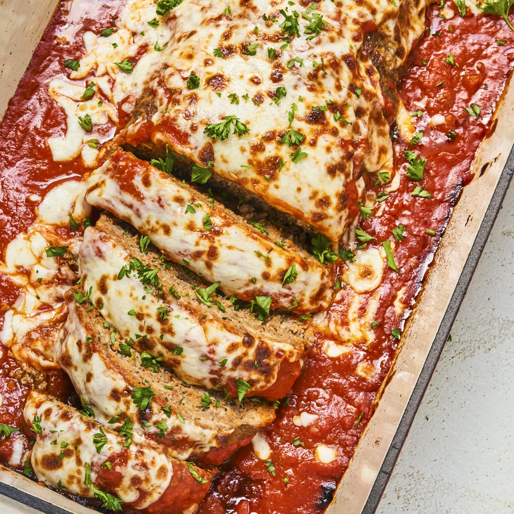

Italian Meatloaf

Description
Easy to make Meatloaf Recipe
Completed in around 1 hour
Ingredients
- 2 pounds lean ground beef
- 1 cup pasta sauce
- 1/2 cup Italian style bread crumbs
- 1/4 cup minced onion
- 1/4 cup ketchup
- 1 beaten egg
- 2 large cloves garlic, minced
- 1/2 teaspoon oregano
- 1/2 teaspoon salt
- 1/4 teaspoon ground black pepper
- 1 1/2 cups shredded mozzarella cheese
Steps
- Preheat oven to 350 degrees F
- Thoroughly mix beef, pasta sauce, bread crumbs, onion, ketchup, egg, garlic, oregano, salt, and ground black pepper together using your hands in a large bowl.
- Spread 1/2 the meat mixture into the bottom of a loaf pan. Spread mozzarella cheese over the center of the meat. Spread remaining meat mixture over the cheese, pressing edges of meat together on the sides to seal in the cheese.
- Bake in the preheated oven until meat is no longer pink in the center, about 1 hour. An instant-read thermometer inserted into the center should read at least 160 degrees F
Back to main page